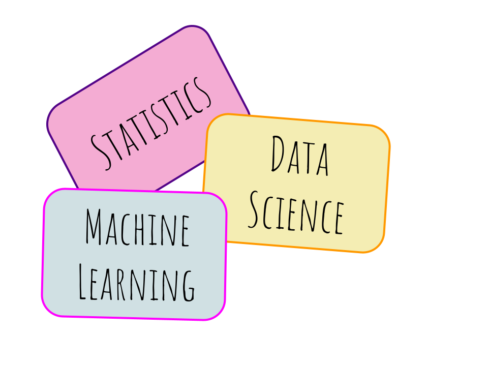

This post uses interactive flashcards to cover terminology in the fields of data science, machine learning, mathematics, probability, and statistics.

Introduction
I’ve recently been applying to and partaking in interviews for remote data science positions all over the country. The last couple of first round technical interviews I went on I was asked a range of questions related to data science, statistics, machine learning, probability, linear algebra, and mathematics. To test myself on answering these types of questions more confidently I created these definitions “Flashcards”, which are actually tabset panels, a component layout in quarto.
Each definition can be viewed by clicking on the “Definition” tab for each word. All words are sorted alphabetically, definitions are generally casual, words will be continually added, and regularly updating.
A
To compare two versions of something, usually a control (A) and a test variable (B).
B
A method for calculating conditional probability, or the likelihood of one event occurring based on prior knowledge of conditions that might be related to the event.
\[P(A|B)=\frac{P(A|B)P(A)}{P(B)}=\frac{\text{(likelihood)}\times\text{(prior)}}{\text{(evidence)}}\]
When a model or statistic doesn’t provide a true representation of the population.
\[bias=\mathbb{E}[f'(x)]-f(x)\]
Bias of the estimated function tells us the capacity of the underlying model to predict the values.
High bias = overly-simplified model, under-fitting, high error on both testing and training data.
The probability of exactly x successes on n repeated trials in an experiment which has two possible outcomes. \[P_x={n\choose x}p^xq^{n-x}\]
C
Data that can be divided into groups or categories such as sex, race, and age.
The probability of an event (A) given that another event (B) has already occurred.
\[P(A|B)=P(A\cap B)P(B)\]
A technique for summarizing performance measurement for machine learning classification algorithms that makes it easy to see whether the system is confusing classes.
D
Organizing data by relevant categories according to predefined criteria so that it may be used and protected more efficiently.
When information outside the training data is used to create the model.
Studying data to find insight using computer science, mathematics, and statistics.
Organized collection of data.
A flowchart that starts with one main idea or question and branches out with potential outcomes of each decision using classification and regression techniques.
Rate of change.
Describes features and summaries of data such as mean, and variance.
A scalar function made up of the entries of a square matrix. It is used to find the inverse of a matrix, and has a lot of important properties related to systems of linear equations.
\[\begin{bmatrix} a & b \\ c & d\end{bmatrix}=ad-bc\]
The technique of reducing the amount of random variables (or features) while retaining as much information as possible. This is done to reduce complexity, improve performance, and make the data easier to visualize.
Mathematics that deals with distinct, separate values instead of continuous values.
E
A scalar that is used to transform an eigenvalue, and considered as a factor by which it is stretched. Often denoted by \(\lambda\).
Are non-zero vectors that do not change direction when any linear transformation is applied.
G
A generalization of the factorial function, it is commonly used to estimate new data points based on known values.
\[\Gamma(x)=(n-1)!\]
\[\Gamma(z)=\int_0^\infty t^{z-1}e^{-t}dt\]
H
An equation that contains itself, or one of its derivatives.
\[f(zx,zy)=z^n f(x,y)\]
Testing a hypothesis and comparing it against the null.
I
Used to make predictions about population or data.
Data that is measured along a scale, where each point is placed at equal distance from one another. Examples would be temperature, or SAT scores.
K
An unsupervised learning algorithm which groups an unlabeled dataset into clusters with similar properties such as mean. An example might be to group similar customers and then to target them using different types of marketing.
L
As the sample size increases the mean gets closer to the average of the population.
Uses a liner approach to modeling the relationship between regressor (predictor) variables \(x\) and a response variable \(y\).
\[y=\beta_0+\beta_1x+\epsilon\]
\[y=\beta_0+\beta_1x_1+\beta_2x_2+...+\beta_nx_n+\epsilon\]
M
A method that uses algorithms to build models to make predictions or decisions.
A rectangular array of numbers arranged in rows and columns which represent a mathematical expression.
N
A type of artificial intelligence that uses connected nodes which loosely model the neurons in the brain. Each node, also known as a neuron, is connected by what is called an edge. Both neurons and edges have a weight that adjusts as the model learns, and can increase or decrease the strength of the signal which travels from the first layer (input) to the last layer (output).

Is categorical data that groups variables into labeled categories that do not overlap, and cannot be ranked. Nominal data needs to be grouped to be analyzed. Examples would be sex or race.
O
Is categorical data that has an order or ranking system such as education level, economic status, or satisfaction rating.
When machine learning models fit exactly to the training model, and therefore may fail to predict future observations.
R
A classification algorithm that consists of many decision trees, and can correct decision trees’ habit of overfitting to their training set.
Is quantitative data that has a true zero such as speed, age, and weight.
A technique to reduce the errors of overfitting by adding extra information.
S
Both are logical arrangements of a multidimensional database, where the fact table is in the middle of the structure, and it is surrounded by dimension tables. A snowflake scheme has normalized dimension tables meaning there are sub-dimensional tables, whereas a star schema is denormalized and easier to query since there are fewer joins between tables.
Star Schema
Snowflake Schema
A type of stochastic (random) process whose joint probability distribution does not change over time. An example would be white noise.
Applied math used to study data to form a judgment in a case of real world applications.
Two or more linear equations working together.
T
Training data is a subset of the original data which is used to train machine learning models.
Test data is another subset of the original data which is independent of the training data, and used to test the accuracy of the model.
A linear mapping between two vector spaces that preserves the operations of vector addition and scalar multiplication.
Type 1 error is a false positive (rejects the null which is actually true), and a type 2 error is a false negative (fails to reject the null which is actually false).
U
When the target variable has more observations in a specific class than the others. It would not be a good idea to use accuracy as a performance measure for highly imbalanced data.